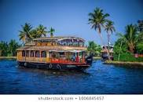

Boating
Referred to as the Venice of the East, Alappuzha has always enjoyed an important place in the maritime history of Kerala. Today, it is famous for its boat races, backwater holidays, beaches, marine products and coir industry. Alappuzha Beach is a popular picnic spot. The pier, which extends out to the sea here, is over 137 years old. Entertainment facilities at the Vijaya Beach Park add to the attraction of the beach. There is also an old lighthouse nearby which greatly intrigues all visitors.
Boating